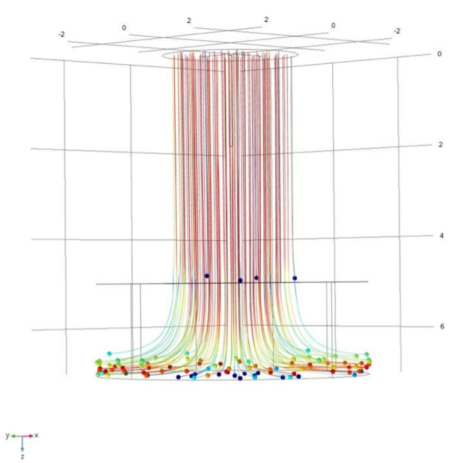
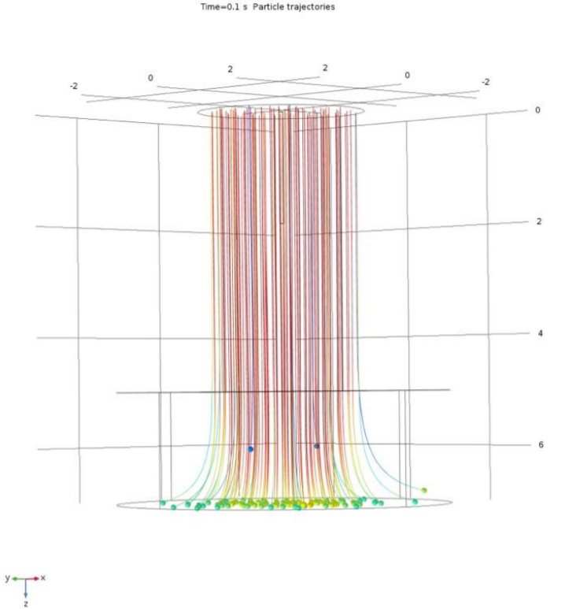
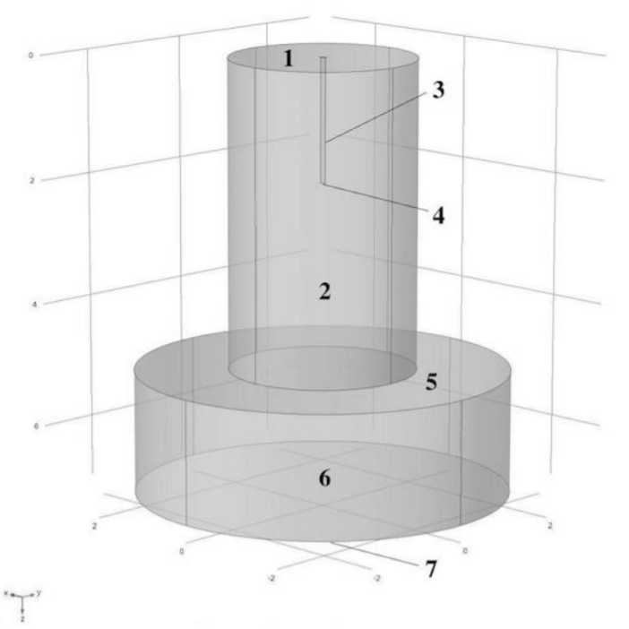
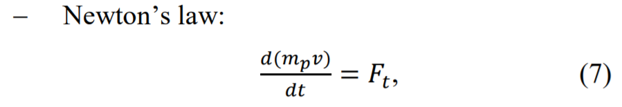
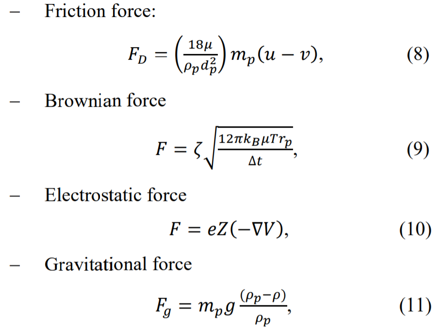

Introduction
Burn injuries are one of the most important modern social
and medical issue due to its prevalence, high death rate
and considerable rate of temporary inability of working
and primary disability [1]. Extensive burns cause huge
losses of blood and weakness of the body therefore making sick man vulnerable to the infections which lead to
inflammation [2].
Electroaerosol therapy is one of the methods of burns
treatment. Exposing the burn wound to negatively
charged medical aerosol particles. Under the impact of
negative charge, the improvement of absorbability and
pharmacologic properties of medical aerosols is occurred.
It is known that thanks to negatively charged medical aerosols the perfusion is increased that helps with regeneration [3]. Moreover, electroaerosols have distinct bactericidal effect, they are able to inhibit the growth of various
bacteria and fungi [4].
Unlike pharmacologic methods, electroaerosol therapy is
less toxic and dangerous to body, and it is considered to
be effective in burns treatment and allows considerably
lower the dose of medicamental burden.
The aim of this study is the research of flow rates of electroaerosols in the workspace of the device of electroaerosol therapy.
Results
Trajectories of particles with diameters 10 um and 40 um
while the workspace chamber is parallel to gravity force
vector 𝑔 were obtained, which are shown on figures 2 and
3. It is considerable that the bigger the diameter of particles is the greater quantity of them reaches the biobject’s
surface.
The effect of gravity force and particle diameter on electroaerosol flow particles ratio on bioobject’s surface was
studied in two workspace chamber’s positions: vertical
(chamber’s axis was parallel to gravity force vector 𝑔 ) or
horizontal (chamber’s axis was perpendicular to gravity
force vector 𝑔 ). We studied the dependence of diameter
of electroaerosol particles and the part of electroaerosol
particles reaching the bioobject’s surface (particle ratio).
The dependence is shown on figures 4 and 5.

Figure 2: Trajectories of particles with diameter 10 um
while the workspace chamber is parallel to gravity force
vector 𝑔

Figure 3: Trajectories of particles with diameter 40 um
while the workspace chamber is parallel to gravity force
vector 𝑔
Materials and Methods
Solving stated task, the geometrical model of device’s
workspace chamber, shown on fig. 1, was suggested. This
model consists of air space (surfaces 5 and 6) between
biological object (surface 7) and workspace chamber (surfaces 1 and 2), and ionizing electrode (surfaces 3 and 4).
To compute this model, we did assume that the flow of
electroaerosols is laminar, it is modelled as Newtonian
incompressible fluid, there are no particle coagulation and
recombination of charges. We consider that the velocity
of particles and air flow are equal, and electroaerosols are
water spheres.

Figure 1: Geometrical model of device's workspace
To compute the ratio of electroaerosol particles on the
bioobject’s surface the following equations of forces affecting particles in the air flow were used [5, 6, 7]:


where mp – particle mass (kg), v – particle velocity (m/s),
t – time (s), Ft – force affecting particle (N), u – airflow
velocity (m/s), ρp – air density (kg/m3
), ρp – particle
density (kg/m3
), dp – particle diameter (m), µ – air dynamic viscosity (Pa∙s), kB – Boltzmann constant, T – absolute temperature (K), rp– particle radius (m), 𝜁 – proportionality coefficient.
All these equations were solved concurrently using finiteelement methods.
To study the electroaerosol flow rates we did set the following boundary conditions: walls (surface 2) of workspace chamber and bioobject’s surface (surface 7) are no
slip; relative pressure at the inlet (surface 1) of workspace
chamber Pin; relative pressure at the outlet (surfaces 5
and 6) of workspace chamber Pout=0; side walls (surface
2) of workspace chamber and bioobject’s surface have
zero potential (ground); potential on ionizing electrode
(surfaces 3 and 4) is U1=-25 kV; zero charge on inlet and
outlet (surfaces 1,5 and 6); initial particle concentration in
an entire model is 0 mol/m3
; Inflow – surface 1 – concentration Сaer=0 mol/m3
; concentration Сaer_m=1,510-16
mol/m3 on the edge (surface 4) of ionizing electrode;
walls (surface 2) of workspace chamber and bioobject’s
surface (surface 7) are perfectly adsorbing walls – concentration Сaer=0 mol/m3
; Outflow – surfaces 5 and 6.